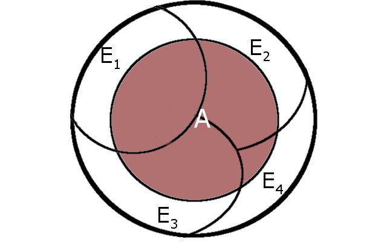
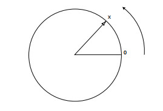

Conditional probability and independence¶
Learning outcomes:
Probability function¶
In the first lecture we defined the probability function (sometimes also called a distribution function) for a sample space, $S$.
The sample space lists all possible outcomes of an experiment. For instance, for a single role of a 6-sided die, a possible sample space is $S = \{1,2,3,4,5,6\}$.
It is a function that, if you feed it an outcome of an experiment, regurgitates a probability $x$,
$p(i \in S) = P(\{i\}) = 0 \leq x \leq 1$
From this function we could calculate the probability of an event, $E$
$P(E) = \sum_{i \in E} p(i)$
I.e. we add together the probabilities of all the outcomes that are in the event, $E$.
For instance, the 'getting an even number larger than 3 when rolling a single dice' = $A = \{2,4,6\} \cap \{4,5,6\} =\{4,6\}$ is
$$ P(A) = \sum_{i \in A} p(i) = p(4) + p(6) = 2/6 $$Conditional probability¶
The idea of conditional probability allows us to calculate probabilities when we have partial information about the system, or to reassess likelihoods when we receive new information.
A conditional probability is the probability of some event $E$, given that another event $F$ has occurred.
The probability of $E$, given that $F$ has occurred is written
$$ P \left(E \mid F \right) $$Example Consider rolling two dice.
We have a sample space
$$ S = \{(i,j), i=1,2,3,4,5,6, j=1,2,3,4,5,6\} $$where say the outcome $(i,j)$ is the first die lands with $i$ dots up and the second die with $j$.
We assume the dice are fair - we assign a probability (distribution) function of $P(\{(i,j)\}) = p(i,j) = \frac{1}{36}$ to all outcomes.
Suppose the first die comes down a three, what is the probability that the sum of the two dice equals eight?
Define $F = \text{'the first die comes down showing a 3'} =\{(3,1),(3,2),(3,3),(3,4),(3,5),(3,6)\}$.
This extra information, allows us to cut down the number of possibile outcomes. Effectively only 6 possible outcomes can now occur.
Each of these remaining outcomes is still equally likely (what do you think?).
So to get the probability we are after we need to find the proportion of the remaining 6 outcomes that are in
$E = \text{'the sum of the dice = 8'} = \{(2,6),(3,5),(4,2),(5,3),(6,2)\}$.
The only outcome that satisfies the criteria is $\{(3,5)\}$ and once we know that $F$ has occurred, it has a one in 6 chance that $\{(3,5)\}$ will occur.
$$ P(E \mid F ) = \frac{1}{6} $$Note also that $\{(3,5)\} = E \cap F$
The probability of the outcome (3,5) before the first die was rolled was $\frac{1}{36}$. After the first die comes up a 3, we've argued that the probability should be $\frac{1}{6}$. Lets look at this as a Venn diagram:
where $S$ is the sample space, and we have labelled two events $E$ and $F$.
Now the probability of $E$ occuring is the probability of the outcomes in $E$.
If we are dealing with finite sets with equal likelihood, this probability is
$$\frac{n(E)}{n(S)}$$.
where $n(E)$ is the number of ways that the event $E$ can occur, and $n(S)$ the same for $S$.
If instead we are looking for $P(E \mid F)$ then it is not the ratio $n(E)$ to $n(S)$ that matters
we know that event $F$ has occured - so now we want the number of ways that both $E$ and $F$ can occur, but now our effective sample space is just $F$. This gives
$$ P(E \mid F) = \frac{P(E \cap F)}{P(F)} $$For discrete equal likelihood sample spaces this is:
$$ P(E \mid F) = \frac{n(E \cap F)}{n(S)}\frac{n(S)}{n(F)}= \frac{n(E \cap F)}{n(F)} $$If we look back to our dice example, this is exactly what we did.
Example revisited we started from
$$ S = \{(i,j), i=1,2,3,4,5,6, j=1,2,3,4,5,6\}, $$and asked,
"Suppose the first die comes down with a three, what is the probability that the sum of the two dice equals eight"?
In the language we've just used, our event $E$ is $\{(2,6),(6,2),(3,5),(5,3),(4,4)\}$, the event $F = \{(3,1),(3,2),(3,3),(3,4),(3,5),(3,6)\}$.
So $E \cap F = \{(3,5)\}$.
Loking at the size of these events (all individual outcomes are equally likely), we have
$$ P(E \mid F) = \frac{n(E \cap F)}{n(S)}\frac{n(S)}{n(F)}= \frac{n(E \cap F)}{n(F)} = \frac{1}{6} $$combined with the standard properties of probabilities this implies
- $P(\bar{E} \mid F) = 1 - \frac{P(E \cap F)}{P(F)}$
- if $E$ and $F$ are mutually exclusive, then $P(E \mid F) = 0$ because $E \cap F = \emptyset$
Multiplicative rule of probabilities¶
the expression for conditional probabilities implies that
$$ P(E \cap F) = P(E \mid F)P(F). $$the probability that $E$ and $F$ occur is the probability that $F$ occurs multiplied by the probability that $E$ occurs given that $F$ has occurred.
This can be generalised to the case of many events $E_i$
$$ P(E_1 \cap E_2 \cap E_3 \cap \dots \cap E_n)= P(E_1) \cdot P(E_2 \mid E_1) \cdot P(E_3 \mid E_1 \cap E_2) \cdots P(E_n \mid E_1 \cap \cdots \cap E_{n-1}) $$we can see that this is the case by using the definition of conditional probability in the right hand side of the equation, giving
$$ P(E_1) \frac{P(E_1 \cap E_2)}{P(E_1)} \cdot \frac{P(E_1 \cap E_2 \cap E_3)}{P(E_1 \cap E_2)} \cdots \frac{P(E_1 \cap E_2 \cdots \cap E_n)}{P(E_1 \cap E_2 \cdots \cap E_{n-1})} $$each internal term of the numerator cancels with the next term in the denominator.
Example¶
If you remember the examples of taking balls out of a bowl in lecture 1 - there were 6 black and 5 white ones.
How many ways are there to select all the balls from the bowl?
In this case there are $11⋅10⋅9 \cdots 3⋅2⋅1 = 11!$
We could calculate this as follows: Each permutation is equally likely, so we can calculate the probability of getting a particular selection, which would be $1/N$, so we find $N$ by the inverse of the probability.
If we look for the particular selection $\{(1,2,3,4,5,6,7,8,9,10,11)\}$, where we've numbered the balls, then
We define $E_n = '\text{the nth ball is ball n}'$
$$ P(E_1 \cap E_2 \cap E_3 \cap \dots \cap E_n) = P(E_1) \cdot P(E_2 \mid E_1) \cdot P(E_3 \mid E_1 \cap E_2) \cdots P(E_n \mid E_1 \cap \cdots \cap E_{n-1}) $$And we'd get $P(E_1 \cap E_2 \cap E_3 \cap \dots \cap E_n) = 1 / 11 \cdot 1/10 \cdot 1/9 \cdots 1/3 \cdot 1/2 \cdot 1/1) = 1/11! = |E_1 \cap E_2 \cap E_3 \cap \dots \cap E_n|/N = 1/N \implies N = 11!$
Tree diagrams¶
Tree diagrams are a useful way of keeping track of the progress of compound experiments.
They can also be seen to work using the multiplicative rule of probabilities.
Let's analyse throwing 3 coins sequentially.
The overall probabilities are arrived at by multiplying the probabilities at each stage of the experiment. This works because at each stage in the compound experiment, the result doesn't depend on the result further down the chain. So to get
$P(\omega_1) = P(\{(H,H,H)\}) = P(\{H\}) \cdot P(\{(H,H)\} \mid \{H\}) \cdot P(\{(H,H,H)\} \mid \{(H,H)\}) = P(\{\{H\}\}) \cdot P(\{\{H\}\}) \cdot P(\{\{H\}\}) = p^3$
because each probability $P(\{(H,H,H)\} \mid \{(H,H)\})$ only depends on the current coin flip, not anything else.
In other words the individual parts of the compound experiment are independent.
Example¶
We have two urns, I and II.
Urn I contains 2 black balls and 3 white balls.
Urn II contains 1 black ball and 1 white ball.
An urn is selected at random and a ball is chosen at random from it.
We can represent the sample space of this experiment as the paths through a tree as shown.
The probabilities assigned to the paths are also shown.
Let $B = \text{“a black ball is drawn,”}$ and $I = \text{“urn I is chosen.”}$.
Then the branch weight $\frac{2}{5}$, which is shown on one branch in the figure, can now be interpreted as the conditional probability $P(B \mid I)$.
If there were more branchings, we would have to use the multiplicative rule of probability.
Example - back to the Urns and balls¶
Suppose that we wanted to work out $P(I \mid B)$?
In words "What is the probability that the ball came from urn I, given that the ball is black."
We can do this as follows
$$ P(I \mid B) = \frac{P(I \cap B)}{P(B)} = \frac{P(I \cap B)}{P(B \cap I ) + P(B \cap II)} = \frac{\frac{1}{5}}{\frac{1}{5}+\frac{1}{4}} = \frac{4}{9} $$We can repeat this for other conditional probabilities and use it to construct a reverse tree diagram.

We'll look at a formula that bears his name shortly that can be used to systematically calculate these reversed probabilities.
Law of total probability¶
In Venn diagram form this collection of events could look like this

Where $A \subset S$.
we can then use the $E_i$ (a bit like basis vectors in linear algebra) to decompose an event $A$ into its intersections with the $E_i$.
$$ A =\bigcup_{i=1}^n A \cap E_i $$This is the general form of the law of total probability (the name is not so firmly established that it will be called this by all authors, though).
Bayes' Formula¶
Where we have used the law of total probability, $P(A) = \sum_{i=j}^n P(A \mid E_j) P(E_j)$, to expand the denominator.

no known picture of Bayes exists, apparently. But this didn't stop people illustrating him in a 1936 book! This is probably just some bloke.
Bayes' solution to a problem of inverse probability was presented in "An Essay towards solving a Problem in the Doctrine of Chances" which was read to the Royal Society in 1763 after Bayes' death.
If we look at the formula, we see that the two types of conditional probabilities have swapped events on the left and right hand sides.
$$ P(E_i \mid A) = \frac{P(A \mid E_i) P(E_i)}{P(A)} $$Bayes' Formula can be looked at as a way updating our opinion on a problem when new data arrives:
in this point of view the $E_i$ represent our prior opinion about the likelihood of events - the probabilities associated with these hypotheses are then updated when we find out that $A$ has occurred.
It is possible to use this sort of process for data fitting.
Bayesian is the other main 'ideology' in probability theory / interpretation.
Example¶
A town has three bus routes, A,B and C.
During rush hour there are twice as many buses on the A route as on B or C.
Over a period of time it has been observed that at a crossroads, where the routes converge, the buses run more than 5 minutes late $\frac{1}{2}, \frac{1}{5},\frac{1}{10}$ of the time.
If an inspector at the crossroads finds that the first bus he sees is more than five minutes late, what it the chance that it is a route B bus?
We don't have complete information about this problem (like all possible outcomes etc).
We can form an exhaustive partition of the experiment into the mutually exhaustive events $A,B,C$ that the inspector sees a bus on that route first.
And we have the event $L$ that the bus is late.
We see that the problem looks like our Bayes' Formula situation: we know the probabilities $P(L \mid A), P(L \mid B), P(L \mid C)$, but we want to know $P(B \mid L)$.
We require $P(B \mid L)$. Using Bayes' Formula we get that
$$ P(B \mid L) = \frac{P(B)\cdot P(L \mid B)}{P(A)\cdot P(L \mid A) + P(B)\cdot P(L \mid B) + P(C)\cdot P(L \mid C)} $$From the information we have we can work out that $P(A)=\frac{1}{2}$ and $P(B) = P(C) = \frac{1}{4}$.
Also we are given that $P(L \mid A) = \frac{1}{2}, P(L \mid B) = \frac{1}{5}, P(L \mid C) = \frac{1}{10}$
Plugging these numbers in gives $P(B \mid L) = \frac{2}{13}$.
Conditional probabilities are probabilities¶
It is good to note that conditional probabilities obey all the axioms we established to call $P(E)$ a probability.
For the statement above to be true our conditional probabilities must satisfy the axioms of probabilities:
- $0 \leq P(E \mid F) \leq 1$
- $P(S) = 1$
- if $E_i, i =1 \ldots n $ are mutually exclusive events then$$P \left( \bigcup_{i-1}^n E_i \mid F \right) = \sum_{i=1}^n P(E_i \mid F) $$
I won't prove these results here, but they are in textbooks and online.
Summary of conditional probabilities¶
Summary of conditional probabilities¶
- Definition of conditional probabilities $$ P(E \mid F) = \frac{P(E \cap F)}{P(F)} $$
- Multiplicative rule $$ P(E_1 E_2 E_3 \dots E_n) = P(E_1) \frac{P(E_1 \cap E_2)}{P(E_1)} \frac{P(E_1 \cap E_2 \cap E_3)}{P(E_1 \cap P(E_2)} \cdots \frac{P(E_1 \cap E_2 \cdots \cap E_n)}{P(E_1 \cap E_2 \cdots \cap E_{n-1})} $$
Law of total probability $$ P(A) = \sum_{i=1}^n P(A \cap E_i) = \sum_{i=1}^n P(A \mid E_i) P(E_i) $$
Bayes' Formula $$ P(E_i \mid A) = \frac{P(A \cap E_i)}{P(A)} = \frac{P(A \mid E_i) P(E_i)}{\sum_{j=1}^n P(A \mid E_j) P(E_j)} $$
Independent events¶
$\textbf{Definition}$ Two events ($E, F$) are independent if the probability that one of them occurs is in no way influenced by whether or not the other has occurred.
So \begin{align} P(E) = P(E \mid F) = P(E \mid \bar{F}), \\ P(F) = P(F \mid E) = P(F \mid \bar{E}). \end{align} put in a different way this means that $$ P(E \cap F) = P(E)P(F) $$ the probability of $E$ and $F$ occurring is just the product of the probability of $E$ occuring and the probability of $F$ occurring.
For more than two events things become a bit more restrictive.
The idea of independent processes will be extremely important as we move forward.
We will use the idea that repetitions of experiments constitute independent processes very often. Note that this is more or less an assumption of the frequentist definition of probability.
Example¶
consider the compound experiment of throwing two fair coins.
The sample space is $S = \{(H,H),(H,T),(T,H),(T,T)\}$.
Define two events
$A = \textrm{'the first coin is a head'} = \{(H,H),(H,T)\}$
$B = \textrm{'the second coin is a tail'} = \{(H,T),(T,T)\}$
And $P(A) = |A|/|S| = 2 /4 = 1/2$ and $P(B) = |B|/|S| = 2/4 = 1/2$.
Now $P(A \cap B) = P({H,T}) = |A \cap B|/|S| = 1/4 = P(A) * P(B)$ so $A$ and $B$ are independent.
But consider
$C = \textrm{'both coins are heads'} = \{(H,H)\}$
$P(C) = |C| / |S| = 1/4$
now $P(B \cap C) = P(\emptyset) = |B \cap C|/|S| = 0/4 \neq P(A) * P(B)$, so $B$ and $C$ are not independent.
$A$ is also not independent of $C$.
In general, it is possible for all pairs of events to be independent, but the complete set of events not to be.
Tabular presentation of conditional probabilities¶
It can sometimes be handy to view conditional probabilities using a tabular representation of relative frequencies - this can also be how real data arrives to us.
Example If we go back to the bus problem we did before the break, but instead we consider what we'd expect if 1000 buses in total ran through the town, we'd end up with something like
| A | B | C | total | |
|---|---|---|---|---|
| Late | 250 | 50 | 25 | 325 |
| Not late | 250 | 200 | 225 | 675 |
| Total | 500 | 250 | 250 | 1000 |
Let $L = \textrm{'a bus is late'}$
The conditional probabilities can easily be read off, for instance $P(B \mid L) = P(B \cap L)/ P(L) = \frac{50}{325} = \frac{2}{13}$.
This is of course exactly equivalent to our pen and paper solution.
The values along the margins are called the marginal probabilities. They give the straight forward probabilities.
This is because of the law of total probability.
$$ P(A) = \sum_{i=1}^n P(A \cap E_i) = \sum_{i=1}^n P(A \mid E_i) P(E_i) $$In this case
$$P(L) = P(L \cap A) + P(L \cap B) + P(L \cap C) = 250 + 50 +25 = 325$$or vertically we have
$$P(A) = P(A \cap L) + P(A \cap \bar{L})$$note that that last relationship is a useful and general one. It is a special case of the law of total probability.
Tabular Bayes' Theorem example¶
A doctor is trying to decide if a patient has one of three diseases d1, d2, or d3.
Two tests are to be carried out, each of which results in a positive (+) or a negative (−) outcome.
There are four possible test patterns ++, +−, −+, and −−.
National records have indicated that, for 10,000 people having one of these three diseases, the distribution of diseases and test results are as in the table below.
| Disease | number | + + | + – | – + | – – |
|---|---|---|---|---|---|
| d1 | 3215 | 2110 | 301 | 704 | 100 |
| d2 | 2125 | 396 | 132 | 1187 | 410 |
| d3 | 4660 | 510 | 3568 | 73 | 509 |
| Total | 10000 |
We can use this data to estimate $P(d_1),P(d_2),P(d_3)$ - these are called prior probabilities, and the conditional probabilities like $P(+- \mid d_1) = \frac{301}{3215}=0.094$.
What the doctor wants though is the probability a patient has disease $d_i$ given the results of the tests. These are the Bayes' or inverse, or posterior probabilities.
We can compute them using Bayes' formula and we'll get results like
| $d_1$ | $d_2$ | $d_3$ | |
|---|---|---|---|
| + + | .700 | .131 | .169 |
| + – | .075 | .033 | .892 |
| – + | .358 | .604 | .038 |
| – – | .098 | .403 | .499 |
these are $P(d_i \mid ++)$ etc. Judicious use of these posterior probabilities can be used to inform decision making:
In this case the prior probability of a patient having disease $d_1$ was $\frac{3215}{10000} = 0.3215$.
If the test result came back ++ then the posterior probability $P(d_1 \mid ++) = 0.700$ and we'd suspect that $d_1$ was the culprit.
Updating information sequentially¶
In the last example we updated the likelihood of a patient having a particular disease based on extra information in the form of the test results.
The previous example with the medical data should give a hint how we can update our ideas about a system as new information comes in - this is why the original probabilities are call priors, and the reversed conditional probabilities are called posterior probabilities.
We'll use this type of method in the computing lab later as a simple form of machine learning.
Continuous Conditional Probability¶
we've stayed focussed upon discrete probability distributions.
However similar observations also apply to the case of continuous probabilities.
Continous probability spaces¶
Consider a spinner - schematically a circle of unit circumference and a pointer

this could end up being a model for a Roulette wheel, for instance.
If we give the spinner a whirl, the pointer will be pointing somewhere a distance $x$ along the circumference.
It seems reasonable that every value $0 \leq x \lt 1$ of the distance between the pointer and the mark on the spinner is equally likely to occur. This means that the sample space is the interval $S = [0,1)$.
We can satisfy
$$ P\left( a\leq X \lt b \right) = b - a $$for every $a$ and $b$ for the event $E = [a,b]$ by a formula of the form
$$ P(E) = \int_{E} f(x) \mathrm{d}x, $$and $f(x)$ is the constant function with value 1.
We call $f(x)$ the density function of $X$.
This is the generalisation of the discrete case we saw earlier:
$$ P(E) = \sum_{i \in E} P(i). $$We want a probability model where every value of the sample space is equally likely (we'll call the result of a spin $X$ for now, later we'll see that this is a continuous random variable).
In a similar way to the discrete case we must have
$$ P\left( 0\leq X \lt 1 \right) = 1. $$It is also the case that we expect the probability of a reading in the top half of the spinner is equal in likelihood to one in the lower half,
$$ P\left( 0\leq X \lt \frac{1}{2} \right) = P\left( \frac{1}{2} \leq X \lt 1 \right) = \frac{1}{2}. $$More generally, if we consider an event, $E = \{[a,b]\} $, we'd like
$$ P\left( a\leq X \lt b \right) = b - a $$for every $a$ and $b$.
Conditional continuous probabilities¶
If we look at a process that has a density function $f(x)$, and if $E$ is an event. We define a conditional density function by
$$ f(x \mid E) = \Bigg \{ \begin{array}{ll} f(x)/P(E) & \mbox{if $x \in E$},\\ 0 & \mbox{if $x \notin E$} \end{array} $$Then for any event $F$, we have
$$ P(F \mid E) = \int_F f(x \mid E)\ \mathrm{d}x. $$We call this the conditional probability of $F$ given $E$. A little manipulation makes the connection to the discrete case:
$$ P(F \mid E) = \int_F f(x \mid E)\ \mathrm{d}x = \int_{E \cap F} \frac{f(x)}{P(E)}\mathrm{d}x = \frac{P(E \cap F)}{P(E)}$$Definition of conditional probabilities $$ P(E \mid F) = \frac{P(E \cap F)}{P(F)} $$
Example of conditional continuous probability distribution¶
In the spinner experiment, suppose we know that the spinner has stopped with head in the upper half of the circle, $0 \leq x \leq 1/2$. What is the probability that $1/6 \leq x \leq 1/3$?
Here $E = \{[0, 1/2]\}, F = \{[1/6, 1/3]\}$
Also we note that $F \cap E = F$.
Hence$$ P(F \mid E) = P(F \cap E)P(E)=\frac{\frac{1}{6}}{\frac{1}{2}}=\frac{1}{3} $$, which is reasonable, since $F$ is $1/3$ the size of $E$.
The conditional density function here is given by $$f(x \mid E) = \Bigg \{ \begin{array}{ll} 2, & \mbox{if 0 ≤ x < 1/2},\\ 0, & \mbox{if 1/2 ≤ x < 1}. \end{array} $$
Thus the conditional density function is nonzero only on $[0, 1/2]$, and is uniform there.
Summary¶
- Definition of conditional probabilities $$ P(E \mid F) = \frac{P(E \cap F)}{P(F)} $$
Law of total probability $$ P(A) = \sum_{i=1}^n P(A \cap E_i) = \sum_{i=1}^n P(A \mid E_i) P(E_i) $$
Bayes' Formula $$ P(E_i \mid A) = \frac{P(A \cap E_i)}{P(A)} = \frac{P(A \mid E_i) P(E_i)}{\sum_{j=1}^n P(A \mid E_j) P(E_j)} $$
Two events ($E, F$) are independent if and only if
- The events $E_1, E_2, E_3, \cdots E_n$ are said to be mutually independent if for every subset $E_1', E_2', E_3', \cdots E_r', r \leq n$ of the events